Results
1 1. Cohort structure dominates over disease status — and we account for it
Before trusting any disease-association result, the pipeline first asked how much of the microbial compositional variance is explained by cohort of origin versus IBD status. The answer, consistently across both feature types and across every covariate-adjusted submodel: cohort explains roughly 6–13× more variance than IBD group.
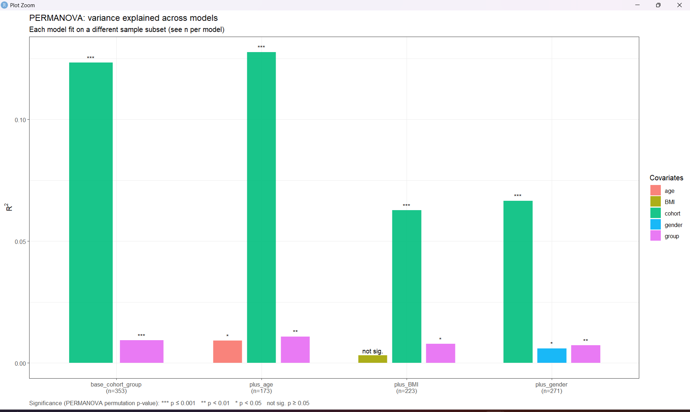
by="margin") variance explained (R²) across four models, each fit on a different sample subset depending on covariate availability. cohort (green) dwarfs group (magenta) in every model; age and gender are independently significant but small; BMI is never significant.
| Model | n | cohort R² | group R² | covariate R² |
|---|---|---|---|---|
| base (cohort + group), species | 353 | 0.1233 (p=0.001) | 0.0093 (p=0.001) | — |
| base (cohort + group), pathway | 352 | 0.1298 (p=0.001) | 0.0105 (p=0.002) | — |
| + age, species | 173 | 0.1276 (p=0.001) | 0.0108 (p=0.008) | age 0.0091 (p=0.031) |
| + age, pathway | 173 | 0.1259 (p=0.001) | 0.0131 (p=0.006) | age 0.0035 (p=0.611, n.s.) |
| + gender, species | 271 | 0.0665 (p=0.001) | 0.0072 (p=0.008) | gender 0.0059 (p=0.037) |
| + gender, pathway | 271 | 0.0722 (p=0.001) | 0.0107 (p=0.007) | gender 0.0051 (p=0.152, n.s.) |
| + BMI, species | 223 | 0.0627 (p=0.001) | 0.0078 (p=0.018) | BMI 0.0031 (p=0.777, n.s.) |
| + BMI, pathway | 223 | 0.0661 (p=0.001) | 0.0097 (p=0.026) | BMI 0.0055 (p=0.204, n.s.) |
Source: results/tables/step6_permanova_summary.csv, step_pathway_permanova_summary.csv.
The corresponding ordination confirms this visually: cohorts separate along PCoA1/PCoA2 far more clearly than IBD vs. control does within any single cohort (circle vs. triangle shapes are thoroughly intermixed within each cohort’s ellipse).
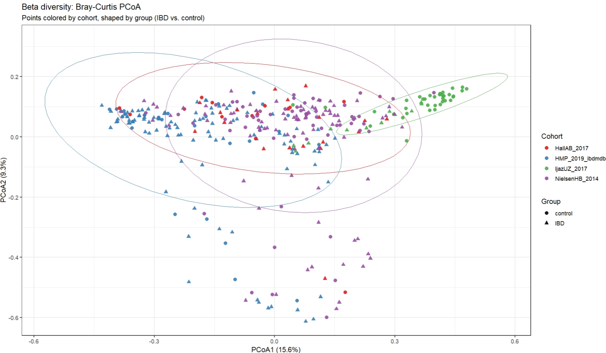
Practical consequence for everything downstream: the blocked Wilcoxon test explicitly blocks on cohort; both MaAsLin2 tiers include cohort as a random effect; and the ML validation strategy includes leave-one-cohort-out testing specifically because pooled cross-validation alone cannot rule out a model that has learned cohort identity rather than IBD biology.
2 2. Alpha diversity: significant in species, not in pathway
Species-level alpha diversity is significantly reduced in IBD across all three metrics; pathway-level (functional) alpha diversity shows no significant difference — an important and genuine divergence between the taxonomic and functional layers, not an oversight.
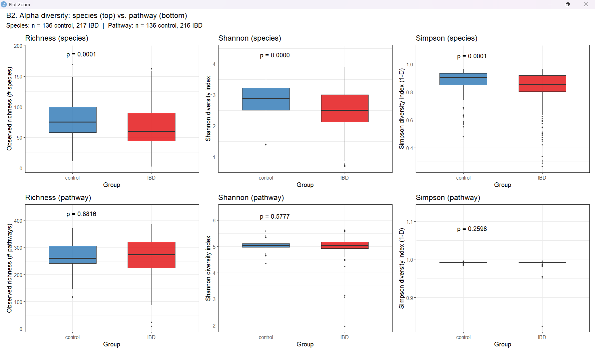
| Metric | Species Wilcoxon p (unadj.) | Species LME p (cohort-adj.) | Pathway Wilcoxon p (unadj.) | Pathway LME p (cohort-adj.) |
|---|---|---|---|---|
| Shannon | 6.91×10⁻⁶ | 0.0021 | 0.578 | 0.898 |
| Simpson | 8.59×10⁻⁵ | 0.0432 | 0.260 | 0.362 |
| Richness | 6.87×10⁻⁵ | 0.00022 | 0.882 | 0.802 |
Source: results/tables/step7_diversity_test_summary.csv, step_pathway_diversity_test_summary.csv. The species result survives cohort-adjustment (LME), confirming it is not purely a cohort-composition artifact.
3 3. Differential abundance: three independent tests, species vs. pathway
The species layer shows a strong, consistent differential-abundance signal across all three tests; the pathway layer shows a striking divergence between MaAsLin2 (almost no hits) and the blocked Wilcoxon test (many hits) — a finding worth featuring on its own.
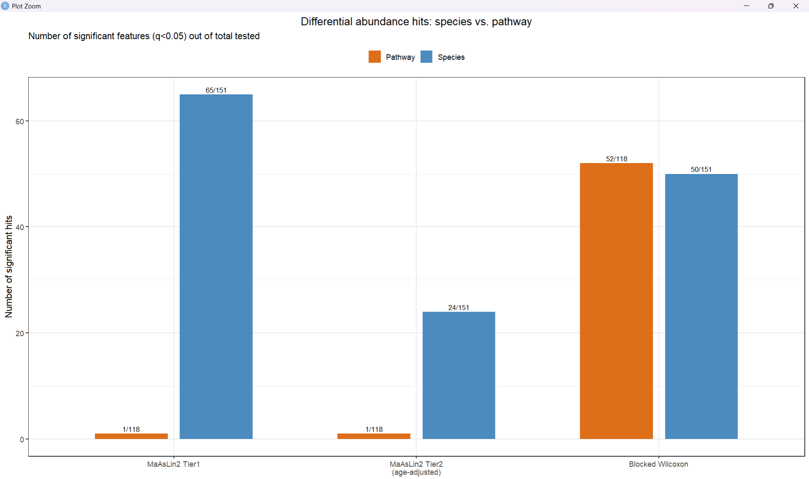
| Test | Species hits / tested | Pathway hits / tested |
|---|---|---|
| MaAsLin2 Tier 1 (all samples, n=353/352) | 65 / 151 | 1 / 118 |
| MaAsLin2 Tier 2 (age-adjusted, n=173) | 24 / 151 | 1 / 118 |
| Blocked Wilcoxon (cohort-blocked) | 50 / 151 | 52 / 118 |
Source: step8_maaslin2_tier1_hit_summary.csv, step9_maaslin2_tier2_hit_summary.csv, step12_wilcoxon_hit_summary.csv and pathway equivalents. The pathway MaAsLin2 models are effectively null (1/118 in both tiers) while the pathway blocked Wilcoxon test finds nearly half the tested pathways significant (52/118) — a large discrepancy between a mixed-model and a rank-based, cohort-blocked non-parametric test on the same data, worth treating as a genuine methodological finding rather than picking one number to report.
3.1 Species — Tier 1 and Tier 2 volcano plots
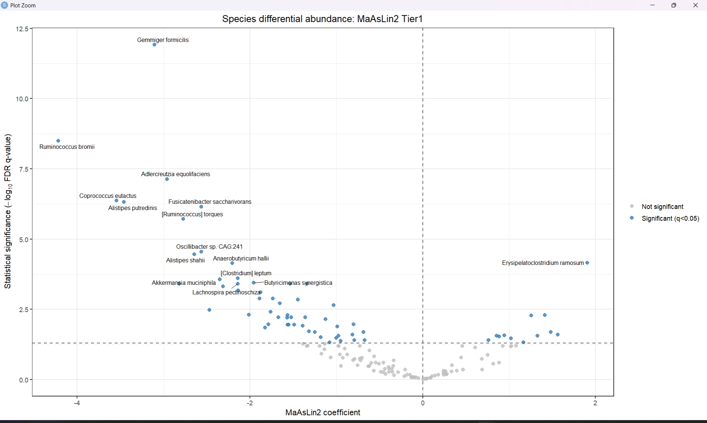
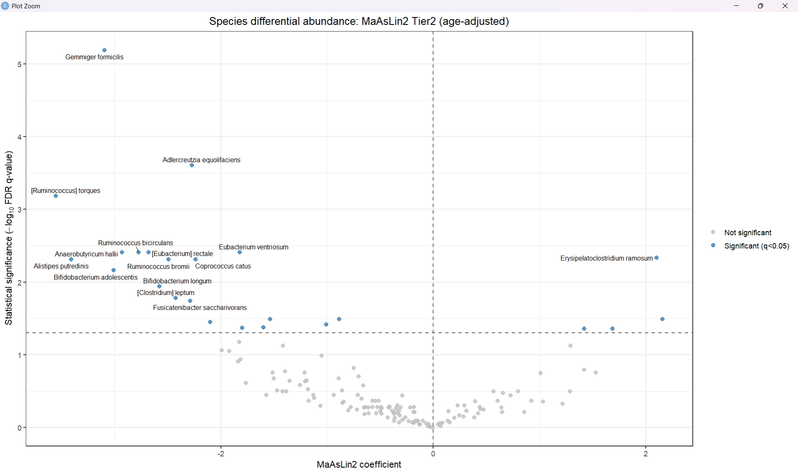
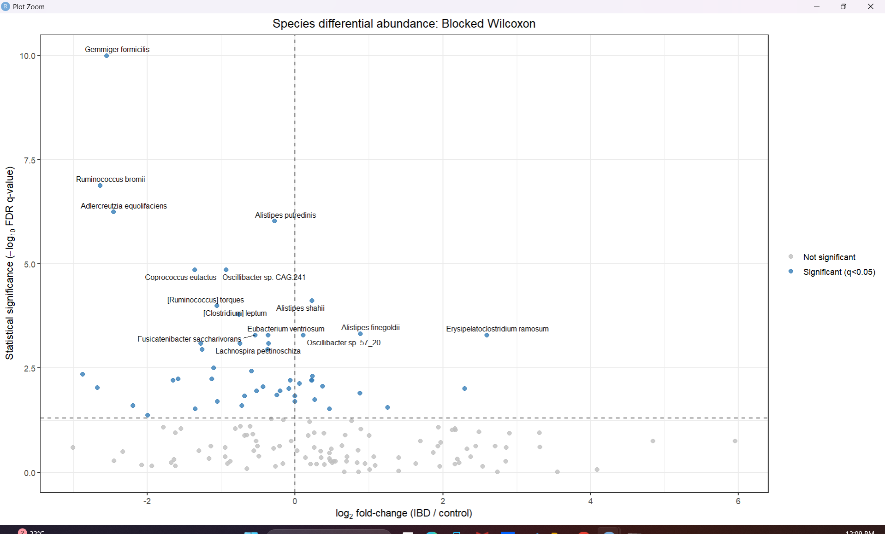
3.2 Pathway — blocked Wilcoxon significant features
Every one of the 52 pathways significant by the blocked Wilcoxon test is lower in IBD — no pathway shows significant enrichment. This one-directional pattern (loss of function, not gain) is consistent across nearly all detected pathways, in contrast to species, where both depletion and enrichment hits exist.
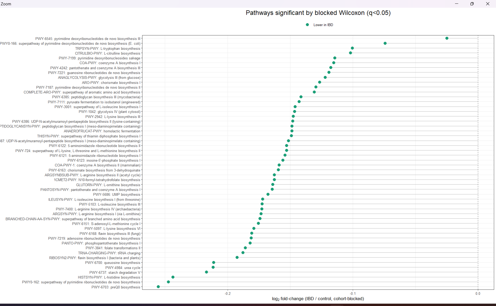
3.3 3-way convergence and the validated species signature
Requiring agreement across MaAsLin2 Tier 1, MaAsLin2 Tier 2, and the blocked Wilcoxon test — the pipeline’s core evidentiary bar — leaves 19 species as fully validated (“triple-candidates”), out of 65 Tier-1 hits.
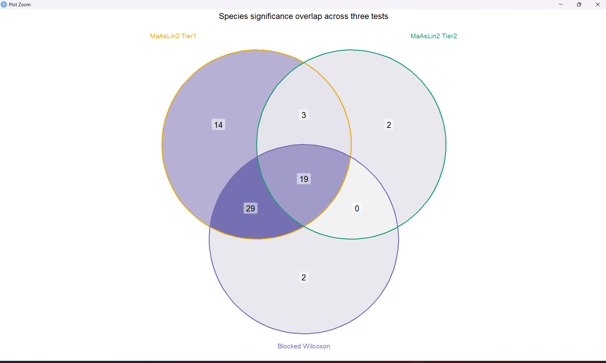
Of the 19 triple-candidates, 17 are depleted in IBD and 2 are enriched (Erysipelatoclostridium ramosum, [Clostridium] symbiosum) — both flagged as notable in Ning et al. 2023 as well (Ning et al. 2023). The signature is dominated by short-chain-fatty-acid-associated commensals (Gemmiger formicilis, Ruminococcus bromii, Fusicatenibacter saccharivorans, [Eubacterium] rectale).
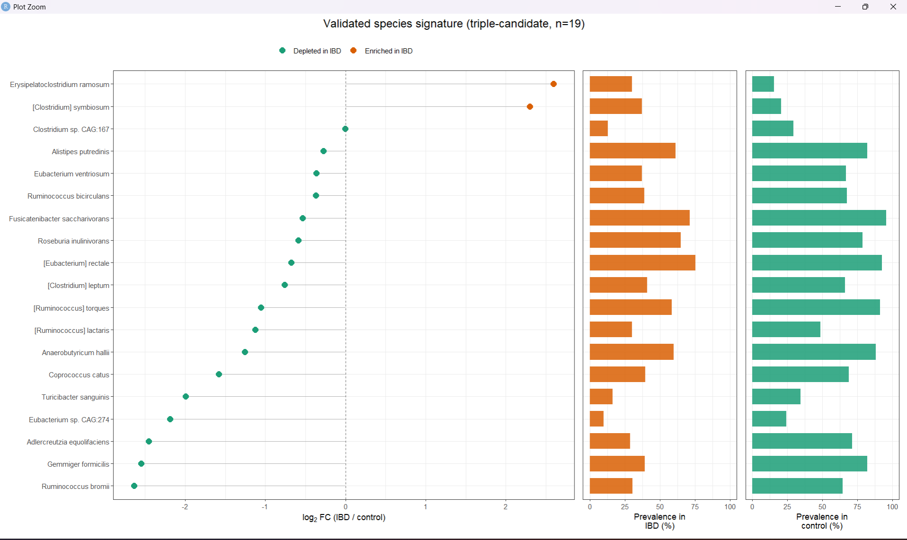
For reference, the full landscape of all 65 MaAsLin2-Tier1-significant species (i.e., before requiring 3-way agreement) is shown below — useful for seeing which additional species show a directionally consistent but less-replicated signal:
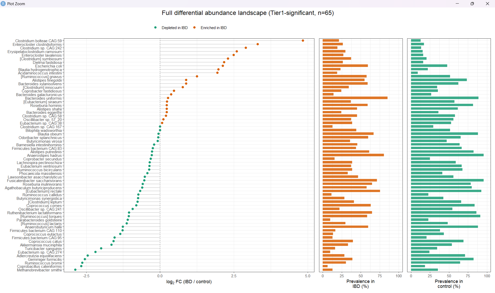
4 4. Feature selection: RFE panels
The 19-species and 18-pathway triple-candidate pools were reduced further via Recursive Feature Elimination, producing three panels each (optimum / parsimony / full pool):
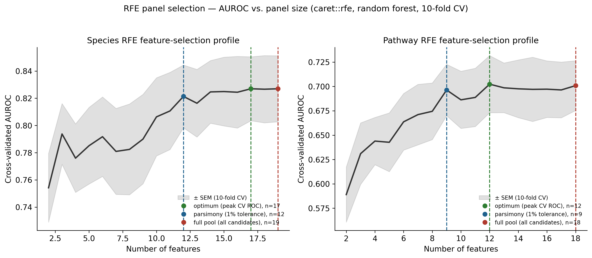
| Feature type | rfe_optimum |
rfe_parsimony (1% tol.) |
rfe_full_pool |
|---|---|---|---|
| Species | 17 | 12 | 19 |
| Pathway | 12 | 9 | 18 |
Note the species curve is nearly flat from ~12 features onward (0.821 at 12 → 0.827 at 17 → 0.827 at 19) — the parsimonious 12-feature panel captures nearly all of the achievable cross-validated signal, which foreshadows the ML sweep result below (the 17-feature rfe_optimum panel wins by only 0.003 AUROC over rfe_parsimony).
5 5. Machine learning: model performance
5.1 Winning models per feature type
Across the full sweep (4 model families × 3 panels for species and pathway; 4 model families × 1 panel for combined — 28 nested-CV runs total, 10×5 repeated stratified CV, Optuna-tuned), ElasticNet won in every feature type:
| Feature type | Winning config | AUROC | AUPRC | n features |
|---|---|---|---|---|
| Species | ElasticNet, rfe_optimum |
0.8325 | 0.888 | 17 |
| Pathway | ElasticNet, rfe_full_pool |
0.6916 | 0.787 | 18 |
| Combined | ElasticNet, rfe_full_pool |
0.8313 | 0.888 | 37 |
A regularized linear model consistently beating three more flexible nonlinear ensembles, at n≈350 samples and 12–37 features, is itself a finding worth stating plainly: there isn’t enough data/signal in this regime for the trees’ extra flexibility to pay off, and L1/L2 regularization is doing real work.
Combining species and pathway barely improves over species alone (0.8313 vs. 0.8325 AUROC) despite more than doubling the feature count (37 vs. 17) — the added pathway features contribute little beyond what species already captures (confirmed independently by the SHAP analysis below).
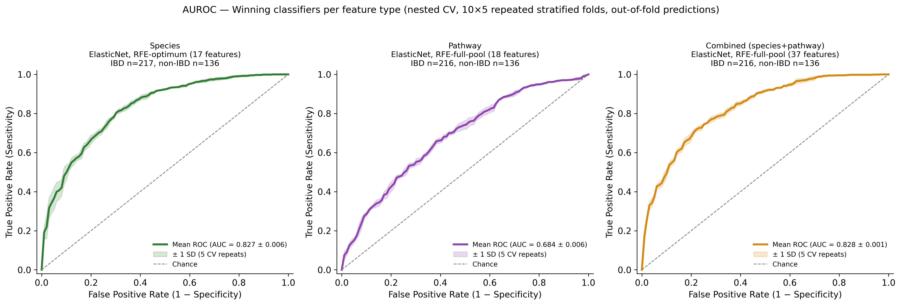
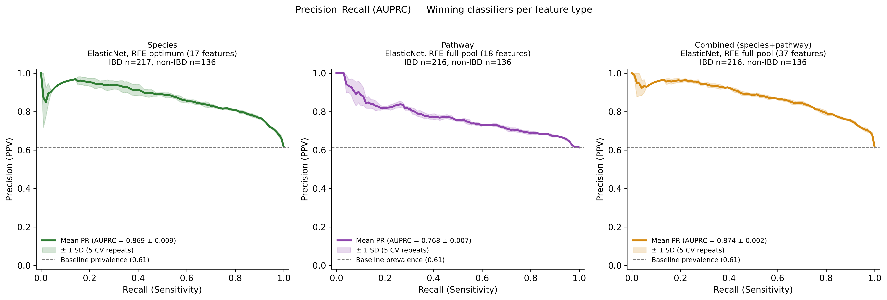
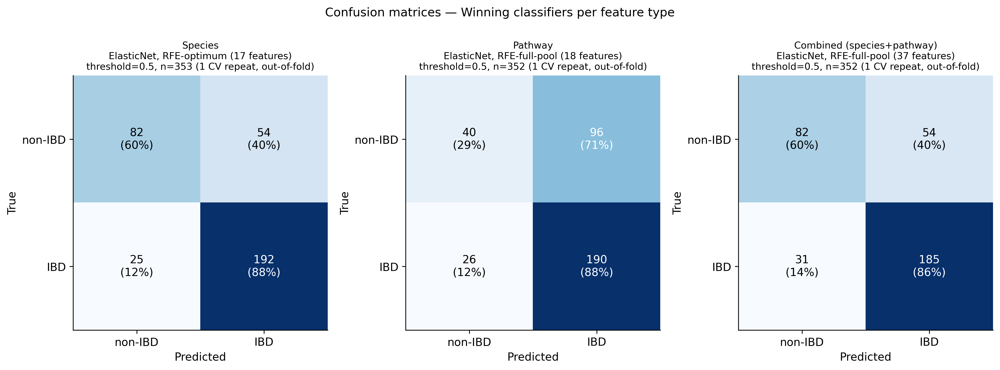
The species classifier correctly identifies 192/217 IBD subjects (88% sensitivity) and 82/136 controls (60% specificity) at the default threshold; the pathway classifier’s much lower ceiling is visible directly in its confusion matrix (71% of true controls misclassified as IBD).
6 6. Leave-one-cohort-out (LOCO) validation
Pooled cross-validation cannot rule out a model that has learned cohort identity rather than disease biology — precisely the failure mode the PERMANOVA result (§1) warns is plausible here. LOCO trains on three cohorts and tests entirely on the fourth, held-out cohort (ElasticNet, rfe_full_pool panel, per feature type — note this is not necessarily each feature type’s pooled-CV winning panel, since species’ pooled winner was rfe_optimum; LOCO fixes rfe_full_pool across all three feature types for a controlled comparison).
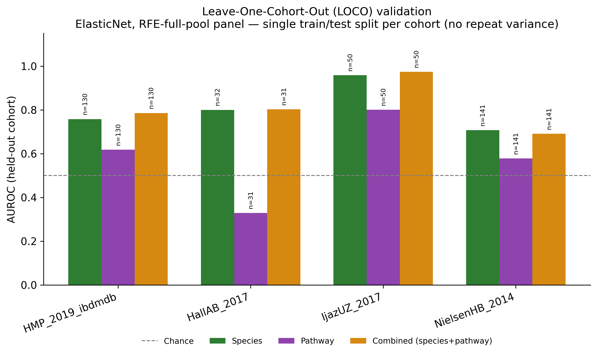
| Held-out cohort | Species AUROC (n test) | Pathway AUROC (n test) | Combined AUROC (n test) |
|---|---|---|---|
| HMP_2019_ibdmdb | 0.758 (130) | 0.618 (130) | 0.786 (130) |
| HallAB_2017 | 0.800 (32) | 0.329 (31) | 0.803 (31) |
| IjazUZ_2017 | 0.958 (50) | 0.800 (50) | 0.974 (50) |
| NielsenHB_2014 | 0.707 (141) | 0.578 (141) | 0.691 (141) |
Source: results/tables/loco_summary_all.csv. Species and combined models generalize reasonably across all four held-out cohorts (0.71–0.97 AUROC). The pathway model collapses to worse than chance on HallAB_2017 (AUROC 0.329, n=31) — the smallest held-out test set among the four cohorts, and consistent with the pathway layer’s already-weaker and more test-dependent signal (§3). This is flagged as an honest limitation, not smoothed over.
7 7. Model interpretability: SHAP
SHAP values are available only for the combined model (species+pathway, 37 features, n=352) — no separate SHAP run exists per feature type.
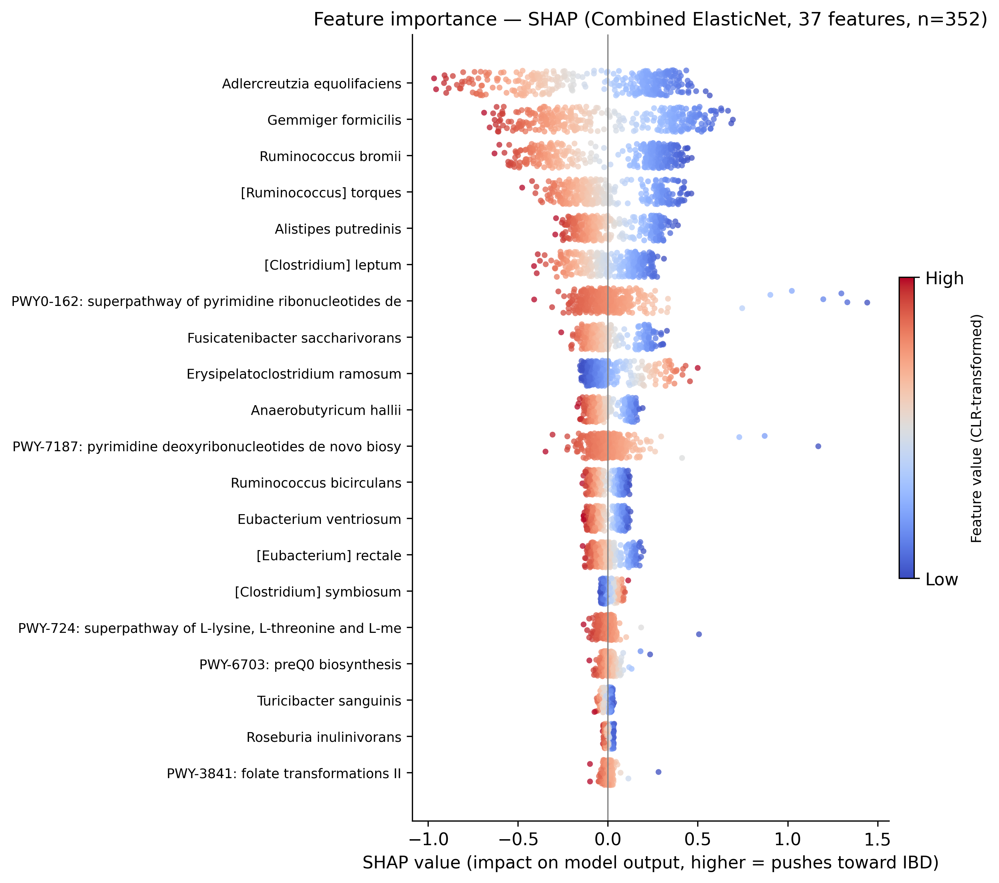
Species features dominate the combined model’s predictions: 88.3% of total |SHAP| mass comes from species features, versus 11.7% from pathway features (combined_shap_contribution_by_type.csv) — direct, model-internal confirmation of the near-zero benefit from adding pathway features observed in the AUROC comparison above (§5). The six highest-ranked SHAP features (Adlercreutzia equolifaciens, Gemmiger formicilis, Ruminococcus bromii, [Ruminococcus] torques, Alistipes putredinis, [Clostridium] leptum) are all members of the 19-species triple-candidate signature identified independently by the statistical DA pipeline (§3) — convergence between an ML model’s learned feature importances and an independently-validated statistical signature, obtained via entirely different methodology, is the strongest piece of corroborating evidence in this project.
8 8. Summary: convergent evidence
Putting the independent lines of evidence side by side:
- Statistical DA (3-way MaAsLin2×2 + blocked Wilcoxon convergence): 19 validated species
- RFE (
rfe_optimum, cross-validated AUROC-maximizing subset of those 19): 17 species - SHAP (combined ElasticNet’s top-ranked features): top 6 are all triple-candidates
- ML performance: the RFE-optimum 17-species ElasticNet panel achieves 0.8325 AUROC pooled, and 0.71–0.96 AUROC across all four LOCO held-out cohorts
Three independently-specified statistical tests, an independent feature-selection procedure, and a fully independent nested-CV/Optuna-tuned classifier trained without any knowledge of the DA results all converge on substantially the same small set of species — Gemmiger formicilis, Ruminococcus bromii, Adlercreutzia equolifaciens, Alistipes putredinis foremost among them. That convergence, more than any single AUROC number, is this project’s central empirical result.